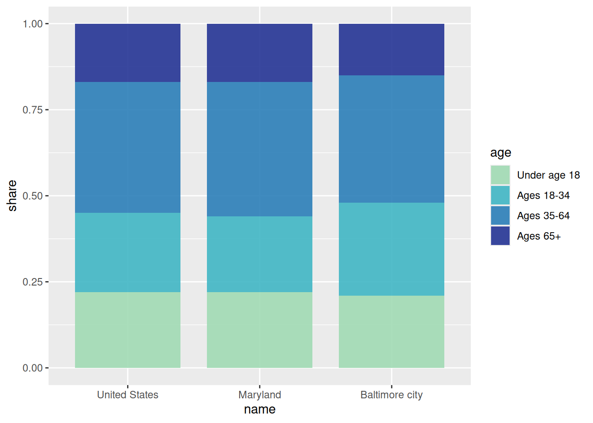
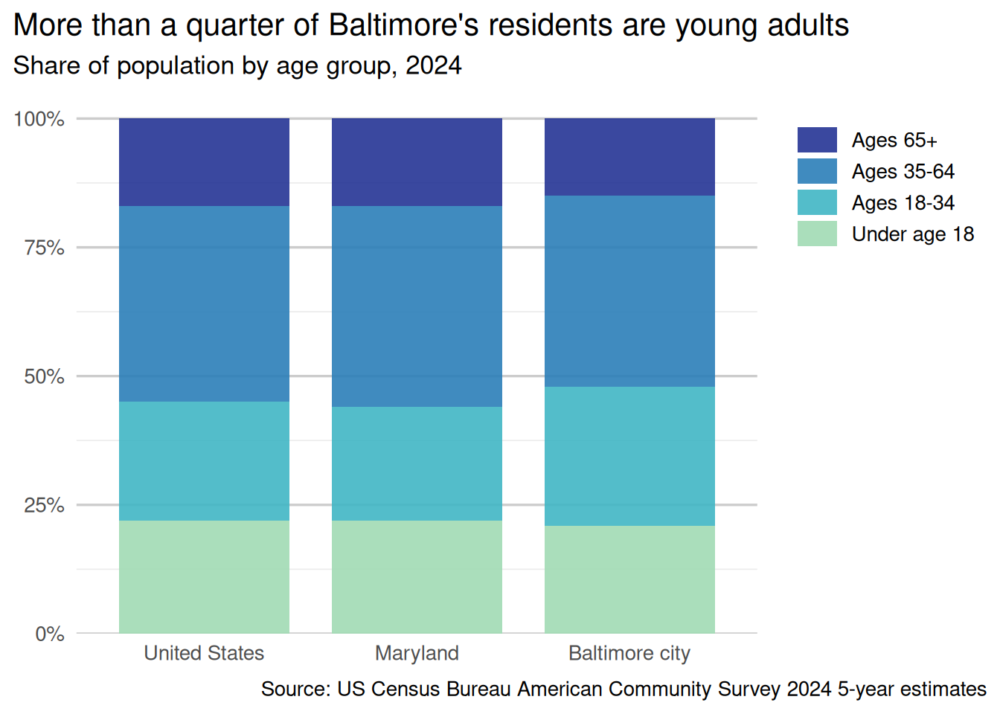
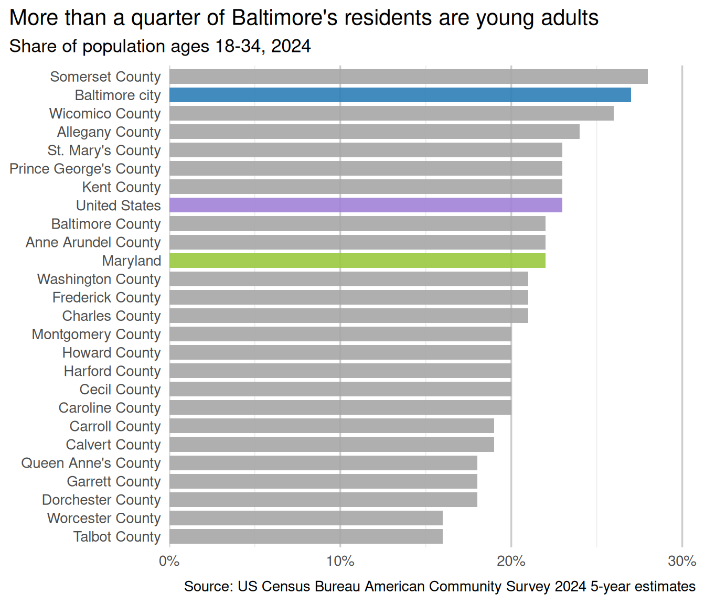

[1] "#2C7FB8"09. Styleguides
We won’t spend much time on styleguides, and I don’t have much to say beyond what’s in the readings. There’s more that goes into styling a set of charts, but the 2 things you’ll focus on for this class are colors that work across charts, and theme elements with a minimal amount of chartjunk.1
1 This is a Tufte term. See Lan & Liu (2025) for fun examples
Lan, X., & Liu, Y. (2025). "I Came Across a Junk": Understanding Design Flaws of Data Visualization from the Public’s Perspective. IEEE Transactions on Visualization and Computer Graphics, 31(1), 393–403. https://doi.org/10.1109/TVCG.2024.3456341
Color
We already talked about color, but in thinking about how you assemble a collection of charts, just make sure your colors work across multiple charts and chart types. This might mean using darker or more saturated colors because the muted colors that worked well for large bars are hard to see in a scatterplot or line chart.
Unfortunately I haven’t seen any collections of palettes specifically that work together across types (diverging, sequential, qualitative), so when I need to have coordinated palettes, I usually have to DIY part of it. Most often I’ll start with a premade sequential palette, usually from ColorBrewer, then generate a handful of qualitative colors based on one of the more saturated colors from my sequential palette.
Most of the qualitative palette generators online are for interface design, not data viz, but two that I use are:
- Colorgorical, designed specifically for viz
- Palx, designed for Material Design UI. I ported it to R for my job’s styleguide package
What I like about both of these generators is that you can give a starting color and generate the rest of the colors relative to that.
Here I use a sequential palette for age groups, then pull out a color to use as a base for a qualitative palette. Then I pass that color through Colorgorical and use the resulting palette for locations.
pop_by_age <- justviz::acs |>
dplyr::filter(name %in% c("United States", "Maryland", "Baltimore city")) |>
dplyr::select(name, ages00_17:ages65plus) |>
tidyr::pivot_longer(-name, names_to = "age", values_to = "share") |>
dplyr::mutate(name = forcats::as_factor(name)) |>
# I'd actually use regex to do this programmatically
dplyr::mutate(
age = forcats::as_factor(age) |>
forcats::fct_recode(
"Under age 18" = "ages00_17",
"Ages 18-34" = "ages18_34",
"Ages 35-64" = "ages35_64",
"Ages 65+" = "ages65plus"
)
)
young_adults <- justviz::acs |>
dplyr::filter(level != "tract") |>
dplyr::select(name, ages18_34) |>
dplyr::mutate(
level2 = forcats::as_factor(name) |>
forcats::fct_other(
keep = c("United States", "Maryland", "Baltimore city"),
other_level = "Other MD counties"
)
) |>
dplyr::mutate(
name = forcats::as_factor(name) |> forcats::fct_reorder(ages18_34)
)
Themes
ggplot has several base themes (see ?ggplot2::theme_gray for the default and to link to any of the others built in). These each take a few basic arguments like font size that serve as starting points for other aspects of the theme to be calculated from. You can edit individual theme elements by adding theme(_arguments_) to your plot.
However, the theme arguments are very tedious, and there are almost 150 of them, so trying to give a rundown of them would be pointless. Just start with one of the plain built-in themes (theme_gray is the default, I usually use theme_minimal) and then read the docs (?ggplot2::theme) to find the tiny piece of the chart you’re trying to change. Some theme arguments take strings or numbers, but many of them take the functions element_text, element_line, or element_rect (or a few others). In addition to the docs, a lot of the ggplot FAQ pages are related to theming.
Here’s how I would use the theme settings and some adjustments to the scales to clean up the previous charts. Normally I’d put all the theme arguments into one theme function call with lots of arguments, but by doing separate calls on separate lines, you can more easily comment out each line to see what each argument does.
When setting theme elements and using preset themes, whatever comes last will override previous settings. So if you call theme with some arguments, then add theme_gray(), the defaults of theme_gray will override any corresponding ones you already set.
pop_age_chart +
# add percentage labels and drop extra space at bottom
scale_y_continuous(
labels = percent,
expand = expansion(mult = c(0, 0.05))
) +
# reverse legend order to match bar stacking
guides(fill = guide_legend(reverse = TRUE)) +
labs(
x = NULL,
y = NULL,
fill = NULL,
title = "More than a quarter of Baltimore's residents are young adults",
subtitle = "Share of population by age group, 2024",
caption = "Source: US Census Bureau American Community Survey 2024 5-year estimates"
) +
# theme_minimal already drops some of the extra elements like axis ticks, border, etc
theme_minimal(base_size = 13) +
# drop vertical grid lines
theme(panel.grid.major.x = element_blank()) +
# darken horizontal grid lines
theme(panel.grid.major.y = element_line(color = "gray80")) +
# align titles to plot, not inner panel
# subtitle inherits from title
theme(plot.title.position = "plot") +
# align caption to plot, doesn't inherit from title
theme(plot.caption.position = "plot") +
# give caption a bit more space at top
theme(plot.caption = element_text(margin = margin_part(t = 8))) +
# align legend to the right side of the plot and 95% along the height
theme(legend.justification = c(1, 0.95)) +
# make legend keys wider than they are tall
theme(legend.key.width = unit(1.5, "lines")) +
theme(legend.key.height = unit(1, "lines")) +
# add spacing between legend keys
theme(legend.key.spacing.y = unit(0.1, "lines"))
young_adults_chart +
# add percentage labels and drop extra space at left
# add a little more space at the right to force including 30%
scale_x_continuous(
labels = percent,
expand = expansion(mult = c(0, 0.1)),
breaks = seq(0, 0.5, by = 0.1)
) +
labs(
x = NULL,
y = NULL,
title = "More than a quarter of Baltimore's residents are young adults",
subtitle = "Share of population ages 18-34, 2024",
caption = "Source: US Census Bureau American Community Survey 2024 5-year estimates"
) +
# theme_minimal already drops some of the extra elements like axis ticks, border, etc
theme_minimal(base_size = 13) +
# drop horizontal grid lines
theme(panel.grid.major.y = element_blank()) +
# darken vertical grid lines
theme(panel.grid.major.x = element_line(color = "gray80")) +
# align titles to plot, not inner panel
# subtitle inherits from title
theme(plot.title.position = "plot") +
# align caption to plot, doesn't inherit from title
theme(plot.caption.position = "plot") +
# give caption a bit more space at top
theme(plot.caption = element_text(margin = margin_part(t = 8))) +
# drop legend---self-explanatory
theme(legend.position = "none")
There’s a package ggthemeassist that gives you an RStudio add-in to interactively edit a theme. It hasn’t been updated in a long time, so there are probably some arguments missing or that have changed. There’s an updated fork on GitHub that I haven’t used and can’t vouch for.